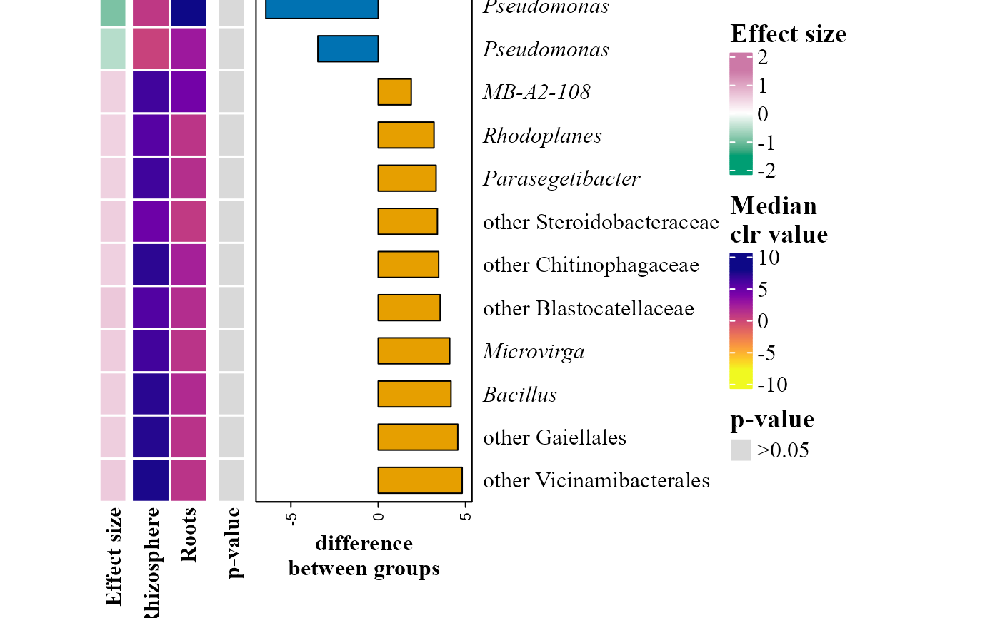
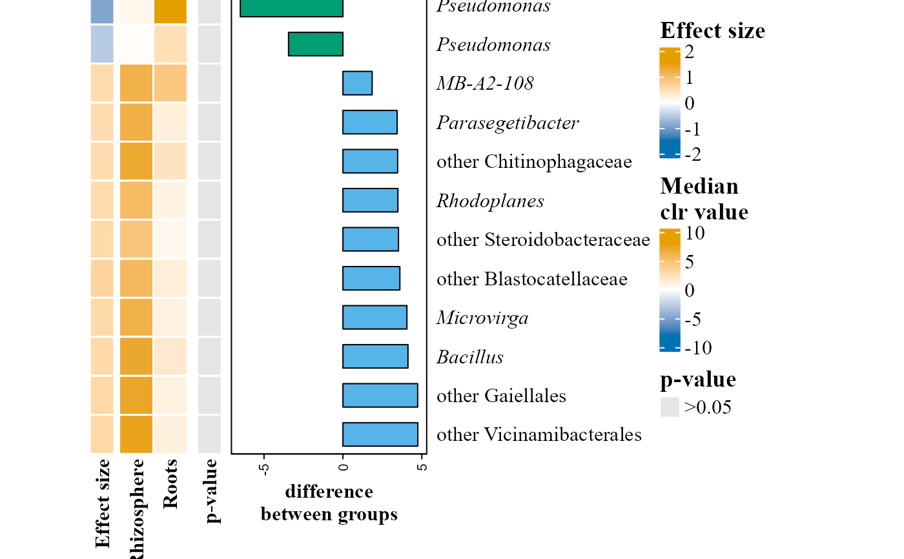

Runs ALDEx2 on a table and returns a ComplexHeatmap
Usage
aldex_heatmap_plot(
table,
metadata,
group_col,
effect_threshold = 0,
pval_threshold = 0.05,
p_adjust_method = "BH",
cluster_rows = FALSE,
cluster_columns = FALSE,
heatmap_colors = NULL,
effect_colors = c("#009E73", "white", "#CC79A7"),
pvalue_colors = c(`<0.001` = "#000000", `<0.01` = "#D55E00", `<0.05` = "#F0E442",
`>0.05` = "grey85"),
group_colors = NULL,
save_table = FALSE,
table_filename = "aldex_pval_effect.txt",
draw = TRUE
)Arguments
- table
A data frame with taxa in rows and samples in columns. The last column must be named
taxonomy, containing full taxonomic strings.- metadata
A data frame containing sample metadata. Must include a
SAMPLEIDcolumn matching sample names intable.- group_col
Character. Name of the column in
metadatathat defines the two groups to compare. Exactly two unique values are required.- effect_threshold
Numeric. Minimum absolute effect size to retain. Default
0(no effect-size filter), so by default the heatmap shows the same taxa thataldex_volcano_plotcolors as significant.- pval_threshold
Numeric or NULL. Maximum p-value to retain (adjusted or not, depending on
p_adjust_method). Default0.05. If NULL onlyeffect_thresholdis applied.- p_adjust_method
"BH"(default) or"none": whetherpval_thresholdand the p-value annotation use ALDEx2's Benjamini-Hochberg adjusted p-values (wi.eBH) or the raw ones (wi.ep). ALDEx2 only computes the BH correction.- cluster_rows
Logical. Cluster heatmap rows (default
FALSE).- cluster_columns
Logical. Cluster heatmap columns (default
FALSE).- heatmap_colors
Controls the color scale of the main heatmap body (CLR values). Three options:
NULL(default, same as"viridis") uses a sequential colorblind-friendly viridis scale (the same family used inabundance_heatmap_plot), with range computed automatically from the data; a preset name string —"viridis"or one of the diverging presets"BuOr"(blue-orange),"BuVm"(blue-vermillion),"BuPk"(blue-pink),"GnPk"(green-pink); or acirclize::colorRamp2function for full manual control.- effect_colors
Three colors for the effect size annotation strip: negative, zero and positive effect (mapped to -1.5, 0 and 1.5). Default
c("#009E73", "white", "#CC79A7")(green-white-pink, colorblind-friendly, distinct from the heatmap body and p-value defaults). Acirclize::colorRamp2()function is also accepted.- pvalue_colors
Named vector of colors for the p-value annotation strip, with names
"<0.001","<0.01","<0.05"and">0.05". Default black/vermillion/yellow/grey (distinct from the heatmap body and effect size defaults). A list with one such vector named"p-value"is also accepted.- group_colors
Optional character vector of colors for the difference barplot annotation, either named after the conditions (e.g.
c(Rhizosphere = "#56B4E9", Roots = "#009E73")) or one color per condition in the order they appear inmetadata[[group_col]]. IfNULL(default) an orange/blue colorblind-friendly palette is used (matching the col_sup/col_inf convention used elsewhere, e.g.aldex_volcano_plot), cycling through the rest of the Okabe-Ito palette as needed for more than two groups.- save_table
Logical. If
TRUE, saves the underlying ALDEx2 results table (filtered taxa, effect size, diff.btw, p-value category) to disk. DefaultFALSE.effectanddiff.btware saved as ALDEx2 returns them (alphabetically second group minus the first); theseccioncolumn says in which group each taxon is higher.- table_filename
Character. File path/name for the saved table (used when
save_table = TRUE). Default"aldex_pval_effect.txt".- draw
Logical. If
TRUE(default), the heatmap is drawn on the current device. UseFALSEto only build the returned grob without drawing it.
Value
Invisibly, a gTree (grid grob) with the heatmap. Printing it
(e.g. typing its name) draws the heatmap; it can also be combined with
other plots (e.g. cowplot::plot_grid(),
patchwork::wrap_elements()).
Examples
table_path <- system.file("extdata", "tabla_bacteria.txt", package = "MicroBioMeta")
table <- read.delim(table_path, row.names = 1, check.names = FALSE)
metadata_path <- system.file("extdata", "metadata_bacteria.txt", package = "MicroBioMeta")
metadata <- read.delim(metadata_path, check.names = FALSE)
colnames(metadata)[1] <- "SampleID"
# group_col must have exactly two groups; Location has two
# (Rhizosphere and Roots) in the bundled example data. Here taxa are
# filtered by effect size alone (pval_threshold = NULL), since this small
# (46-sample) dataset has few taxa with significant p-values.
aldex_heatmap_plot(
table = table,
metadata = metadata,
group_col = "Location",
effect_threshold = 0.5,
pval_threshold = NULL
)
#> aldex.clr: generating Monte-Carlo instances and clr values
#> conditions vector supplied
#> operating in serial mode
#> computing center with all features
#> aldex.ttest: doing t-test
#> aldex.effect: calculating effect sizes

# All the colors have colorblind-friendly defaults, but each can be set by
# hand: group_colors (difference bars, named after the groups),
# effect_colors (negative, zero and positive effect size), pvalue_colors
# (one color per p-value class) and heatmap_colors (median clr values)
# \donttest{
aldex_heatmap_plot(
table = table,
metadata = metadata,
group_col = "Location",
effect_threshold = 0.5,
pval_threshold = NULL,
group_colors = c(Rhizosphere = "#56B4E9", Roots = "#009E73"),
effect_colors = c("#0072B2", "white", "#E69F00"),
pvalue_colors = c("<0.001" = "black", "<0.01" = "grey30",
"<0.05" = "grey60", ">0.05" = "grey90"),
heatmap_colors = "BuOr"
)
#> aldex.clr: generating Monte-Carlo instances and clr values
#> conditions vector supplied
#> operating in serial mode
#> computing center with all features
#> aldex.ttest: doing t-test
#> aldex.effect: calculating effect sizes

# }